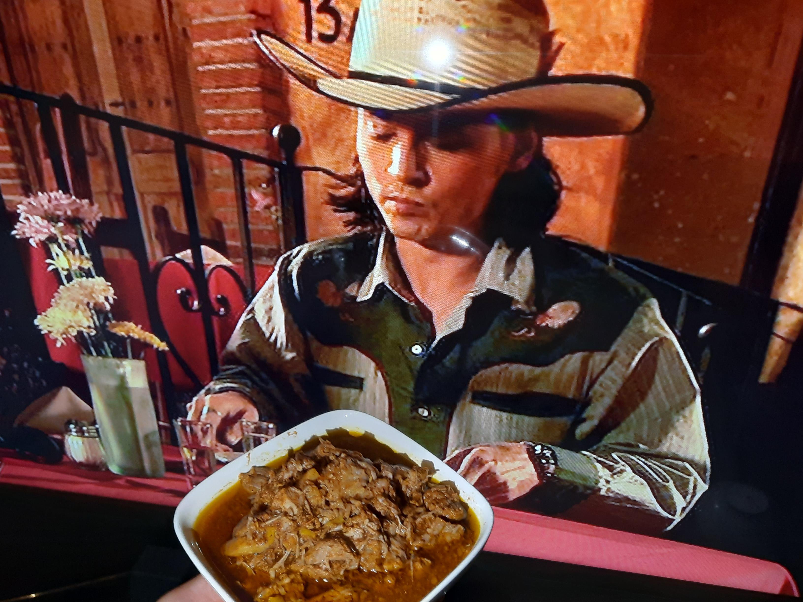

Robert Rodriguez
This is his Puerco Pibil.

Robert Rodriguez is known for his early low-budget films and grindhouse aesthetic. He also likes to cook, and this is one of his recipes.
Ingredients
- 5 pounds pork butt, cut into 2 inch cubes
- 5 tablespoons annato seeds
- 2 teaspoons cumin seeds
- 1 tablespoon whole black pepper
- 1/2 teaspoon whole cloves
- 8 whole allspice berries
- 2 habanero Peppers,fresh or dried, cleaned and minced (optional)
- 1/2 cup orange juice
- 1/2 cup white vinegar
- 8 garlic cloves
- 2 tablespoons salt
- 5 lemons
- 1 shot of tequila
- banana leaves (optional)
Steps
- Grind the annato seeds, cumin seeds, whole peppercorns, whole cloves, and whole allspice in a mortar and pestle, molcajete y tejolote, spice grinder or coffe grinder.
- Blend the cleaned and chopped habanero peppers with the orange juice, vinegar, garlic and salt.
- Mix the dry spices with the liquid.
- Add the juice of 5 lemons and a nice splash of tequila.
- Place the cubed pork butt in a large zip lock bag and add the marinade. Soak 4-6 hours, in refrigerator, turning several times.
- Line (8 by 13) baking pan with banana leaves. Pour in pork along with the marinade. Cover with Banana leaves and seal the pan with foil. Bake in a 325 F degree oven for 4 hours.